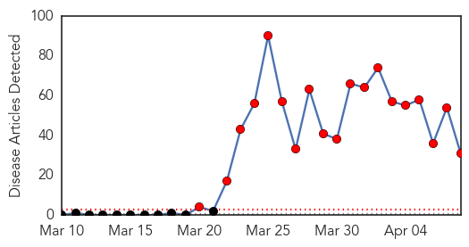

Ebola
30-Day Web Trend
19 alerts, 0 warnings

30-Day Twitter Trend
6 alerts, 0 warnings

Article Locations

Article Confidences

Top Articles:
- 1.000
- Ebola could spread for months
- 1.000
- Ebola outbreak most challenging ever seen by WHO
- 1.000
- Ebola virus kills more than 100 West Africans
- 1.000
- West Africa Ebola outbreak among 'most challenging' ever WHO
- 1.000
- DEADLY EBOLA VIRUS WITH NO KNOWN CURE IS SPREADING
- 1.000
- Ebola Outbreak: WHO warns against restriction on trade activities in W/Africa
- 1.000
- Ebola outbreak is among most challenging, could last months: WHO
- 1.000
- Ebola outbreak in West Africa could last months, officials say
- 1.000
- Officials say Ebola outbreak in West Africa is among most challenging, could last months
- 1.000
- Test results from suspected Ghana Ebola case comes out negative
- 1.000
- iafrica.com SA not testing for Ebola
- 1.000
- iafrica.com Guinea Ebola death toll at 95
- 1.000
- West Africa Ebola outbreak among 'most challenging' ever
- 1.000
- Senegal has 'well-oiled system' to stop Ebola
- 0.999
- West Africa Ebola outbreak among `most challenging` ever: WHO
- 0.999
- Guinea's first Ebola survivors return to family, stigma remains
- 0.999
- Ebola Virus Outbreak In West Africa Expected To Last 2 To 4 More Months, WHO Announced
- 0.999
- Guinea's first Ebola survivors return home but stigma remains
- 0.999
- Guinea's first Ebola survivors return to family, stigma remains
- 0.998
- The African Ebola outbreak that keeps getting worse
- 0.998
- Success Achieved but Challenges Remain
- 0.998
- Ebola Outbreak Expected for Another 2-4 Months
- 0.998
- Ebola virus: Ghana shouldn’t close its borders
- 0.998
- Guinea Ebola patients discharged
- 0.998
- Guinea's first Ebola survivors return to family, stigma remains
- 0.994
- Guinea death toll stands at 95
- 0.994
- Ebola outbreak among 'most challenging'
- 0.992
- WHO says West African Ebola outbreak to last 2-4 months
- 0.960
- Successes and challenges in response to Guinea Ebola epidemic
- 0.954
- Ebola Outbreak Creates Political Controversy in Liberia
- 0.946
- Ebola still spreading, WHO expects outbreak to last 2-4 months
Top Tweets:
-
No tweets found for Apr 08, 2014
Unknown
30-Day Web Trend
0 alerts, 0 warnings

30-Day Twitter Trend
0 alerts, 0 warnings

Article Locations

Article Confidences

Top Articles:
- 0.998
- MERS Fears Prompt ER Closure at Saudi Hospital — Naharnet
- 0.994
- Japan Orders Strict Measures Against PED Virus
- 0.981
- Cases of scarlet fever in Wales reach 20 year high
- 0.917
- Chicago Tribune
- 0.917
- Chicago Tribune
- 0.917
- Chicago Tribune
- 0.917
- Chicago Tribune
- 0.917
- Chicago Tribune
- 0.866
- Russia's Lavrov, EU's Ashton discuss Ukraine crisis
- 0.866
- Russia says NATO trapped in "Cold War thinking"
- 0.866
- Environmental activists protest against the deal with Germany's Renewable Energy Law in front of the Chancellery in Berlin
- 0.866
- File photo of construction workers fixing solar panels for solar power plant near Olching
- 0.866
- NATO head warns Russia of "grave consequences" over Ukraine
- 0.866
- Record low wheat output expected in Syria as drought looms
- 0.855
- New Leaflet Spells out Dangers of African Swine Fever
- 0.816
- African Swine Fever Risk Level Raised
- 0.812
- PED remains a concern in Ontario
- 0.806
- Read Health Articles & Blogs at TheHealthSite.com
- 0.602
- HSC doctor receives $2 million grant for research on pandemic disease
- 0.555
- Prince William News
- 0.547
- Nationwide polio prevention campaign launched
- 0.542
- UN and partners renew anti-polio efforts in Middle East after first case detected in Iraq
- 0.536
- The Argonaut – Spreading awareness, not disease — Get Yourself Tested campaign begins on campus this week
- 0.501
- Obama signs cancer research bill in memory of girl
Top Tweets:
-
No tweets found for Apr 08, 2014